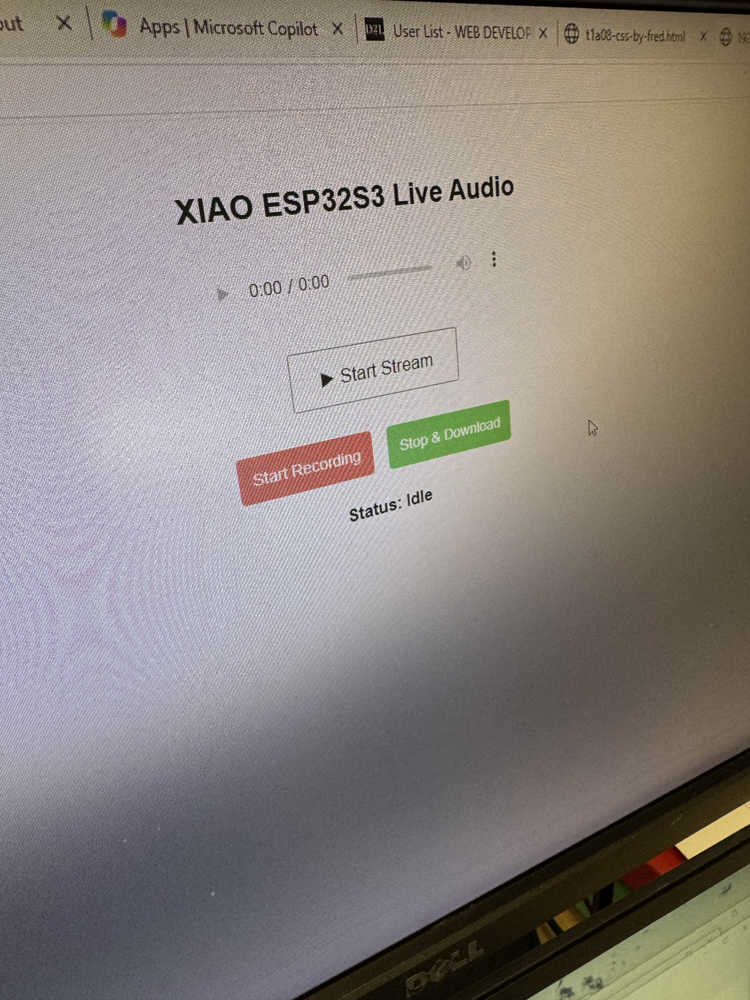

Web & SoftwareDEMO / 01
Web Server
A demonstration of the embedded web server serving content to a browser over the network.
Watch the embedded-systems experiments in action. These recordings document the web server, Bluetooth Low Energy, on-device vision, and LoRa peer-to-peer work.

A demonstration of the embedded web server serving content to a browser over the network.
Recorded evidence from the BLE communication experiment.
A demonstration of the vision-model activity running on-device with a live camera input.
Recorded evidence from the LoRa P2P wireless communication test.